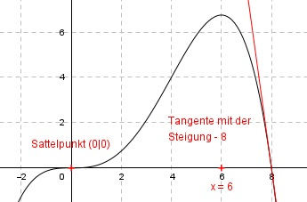
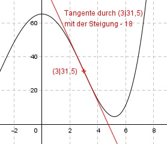
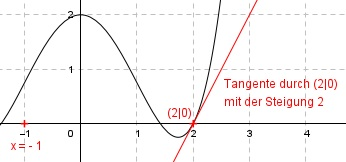
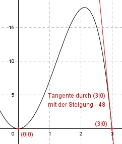
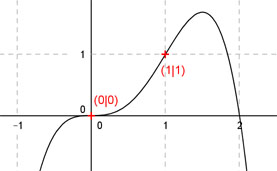
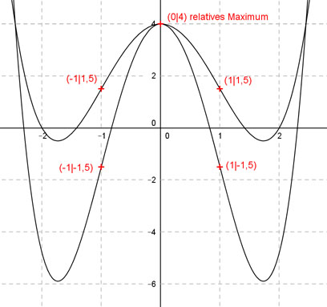
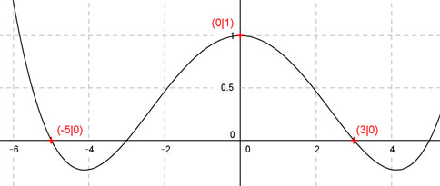
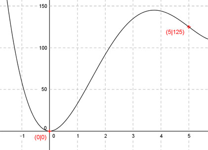
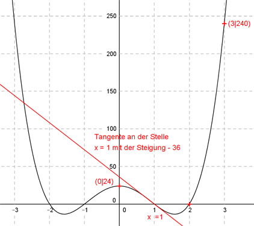

Aufgabe 81
Der Graph einer ganzrationalen Funktion 4. Grades
berührt im Punkt (2|0) die x-Achse, hat im Punkt
(0|0) einen Wendepunkt, und die Wendetangente
schneidet die x-Achse unter einem Winkel von 45°.
Wie lautet seine Funktionsgleichung?

Wie löse ich Matheaufgaben?
Steckbriefaufgaben
Sie sehen ein gelbes Eingabefeld und die
Schalter: Prüfen und Lösung.
Tragen Sie Ihr Ergebnis ein, prüfen Sie es
oder starten Sie eine Lösung.
Aufgabe 81 Der Graph einer ganzrationalen Funktion 4. Grades berührt im Punkt (2|0) die x-Achse, hat im Punkt (0|0) einen Wendepunkt, und die Wendetangente schneidet die x-Achse unter einem Winkel von 45°. Wie lautet seine Funktionsgleichung?
Aufgabe 82 Der Graph einer achsensymmetrischen ganzrationalen Funktion 4. Grades hat in (2|0) einen Wendepunkt, und die Wendetangente hat eine Steigung von -2. Wie lautet seine Funktionsgleichung? f(x) = 0,03125x4 - x2
Aufgabe 83 Der Graph einer achsensymmetrischen ganzrationalen Funktion 4. Grades hat in (0|-4) einen Tiefpunkt und berührt die x-Achse bei 2 und -2. Wie lautet seine Funktionsgleichung?

Aufgabe 84 Der Graph einer ganzrationalen Funktion 4. Grades hat einen Wendepunkt bei x = 3, einen im Punkt (-2|-81) mit der Steigung 90 und schneidet die x-Achse bei -1. Wie lautet seine Funktionsgleichung? f(x) = x4 - 2x3 - x2 + 2x + 35
Aufgabe 85 Der Graph einer achsensymmetrischen ganzrationalen Funktion 4. Grades hat in (2|0) einen Wendepunkt mit der Steigung - 4/3. Wie lautet seine Funktionsgleichung?

Aufgabe 86 Der Graph einer achsensymmetrischen ganzrationalen Funktion 4. Grades geht durch den Punkt (0|-4) und hat in (-4|0) eine waagerechte Tangente. Wie lautet seine Funktionsgleichung? f(x) = - (1/ )x4 + 0,5x2 - 4
Aufgabe 87 Der Graph einer ganzrationalen Funktion 4. Grades hat im Wendepunkt (0|0) und an der Stelle x = 6 waagerechte Tangenten und schneidet die x-Achse an einer weiteren Stelle mit der Steigung -8. Wie lautet seine Funktionsgleichung? 
Aufgabe 88 Der Graph einer ganzrationalen Funktion 4. Grades hat im Punkt (0|0) eine waagerechte Tangente und in (-2|2) einen Sattelpunkt. Wie lautet seine Funktionsgleichung? f(x) = (3/8)x4 - 2x3 + x2
Aufgabe 89 Der Graph einer achsensymmetrischen ganzrationalen Funktion 4. Grades hat im Wendepunkt (3|31,5) die Steigung -18. Wie lautet seine Funktionsgleichung? 
Aufgabe 90 Die zweite Ableitung einer ganzrationalen Funktion 4. Grades lautet 12x2 -6. Ihr Graph geht durch (1|2) und (-2|3). Wie lautet seine Funktionsgleichung? f(x) = x4 - 3x2 + ( /3)x + 7/3
Aufgabe 91 Der Graph einer achsensymmetrischen ganzrationalen Funktion 4. Grades hat im Punkt (2|0) die Steigung 2 und bei x = -1 einen Wendepunkt. Wie lautet seine Funktionsgleichung? 
Aufgabe 92 Der Graph einer ganzrationalen Funktion 4. Grades hat im Punkt (0|0) die Wendetangente y = x und im Punkt (2|4) die Steigung 0. Wie lautet seine Funktionsgleichung? f(x) = -0,5x4 + x3 + x
Aufgabe 93 Der Graph einer achsensymmetrischen ganzrationalen Funktion 4. Grades geht durch den Koordinate- nursprung und schneidet die x-Achse an der Stelle x = 3 mit der Steigung -48. Wie lautet seine Funktionsgleichung? 
Aufgabe 94 Der Graph einer achsensymmetrischen ganzrationalen Funktion 4. Grades hat in (2|- 20/3) einen Wendepunkt mit einer Steigung von -16/3. Wie lautet seine Funktionsgleichung? f(x) = (1/12)x4 - x2
Aufgabe 95 Der Graph einer ganzrationalen Funktion 4. Grades hat im Punkt (0|0) einen Sattelpunkt und im Punkt (1|1) einen Wendepunkt. Wie lautet seine Funktionsgleichung? 
Aufgabe 96 Der Graph einer ganzrationalen Funktion 4. Grades berührt an der Stelle x = -1 die x-Achse und hat in (2|6,75) einen Sattelpunkt. Wie lautet seine Funktionsgleichung? f(x) = 0,25x4 - x3 + 4x +
Aufgabe 97 Der Graph einer achsensymmetrischen ganzrationalen Funktion 4. Grades geht durch den Punkt (0|2) und hat in (1|0) einen Tiefpunkt. Wie lautet seine Funktionsgleichung?

Aufgabe 98 Der Graph einer ganzrationalen Funktion 4. Grades geht durch den Punkt (-2|-4), hat im Koordinaten- ursprung ein relatives Minimum und im Punkt (-1|0) die Steigung 3. Wie lautet seine Funktionsgleichung? f(x) = 2x4 + x3 + 5x2
Aufgabe 99 Der Graph einer achsensymmetrischen ganzrationalen Funktion 4. Grades hat Wendepunkte, die jeweils eine Einheit von der y-Achse und 1,5 Einheiten von der x-Achse entfernt liegen und ein relatives Maximum im Punkt (0|4). Wie lautet seine Funktionsgleichung? 
Aufgabe 100 Der Graph einer achsensymmetrischen ganzrationalen Funktion 4. Grades berührt bei x = 2 die x-Achse und geht durch den Punkt (0|8). Wie lautet seine Funktionsgleichung? f(x) = x4 + 4x2 + 8
Aufgabe 101 Der Graph einer achsensymmetrischen ganzrationalen Funktion 4. Grades hat Nullstellen bei -5 und 3 und geht durch denPunkt (0|1). Wie lautet seine Funktionsgleichung? 
Aufgabe 102 Der Graph einer ganzrationalen Funktion 4. Grades hat bei (0|0) einen Extremwert und bei (2|0) einen Wendepunkt mit einer zur Geraden y = -4x parallelen Tangente. Wie lautet seine Funktionsgleichung? f(x) = x4 - x3 + 6x2
Aufgabe 103 Von einer ganzrationalen Funktion 4. Grades sind bekannt: f(0) = 0, f(5) = 125, f'(1) = 55, f''(0) = 90 und f'''(0) = 78. Wie lautet die Funktionsgleichung? 
Aufgabe 104 Der Graph einer ganzrationalen Funktion 4. Grades schneidet die y-Achse bei 4, berührt die x-Achse bei x = 2 und hat im Punkt (1|2,25) die Steigung -3. Wie lautet seine Funktionsgleichung? f(x) = x4 - 2x2 + 4
Aufgabe 105 Der Graph einer achsensymmetrischen ganzrationalen Funktion 4. Grades geht durch den Punkt 24 auf der y-Achse, hat an der Stelle x = 1 die Steigung -36 und geht durch (3|240). Wie lautet seine Funktionsgleichung? 
Aufgabe 106 Der Graph einer achsensymmetrischen ganzrationalen Funktion 4. Grades hat eine Nullstelle bei x = 4, an der Stelle x = 1 eine Tangente parallel zur Geraden y = -36x + 82 und geht durch den Punkt (3|-35). Wie lautet seine Funktionsgleichung? f(x) = x4 - x2 + 64
zurück